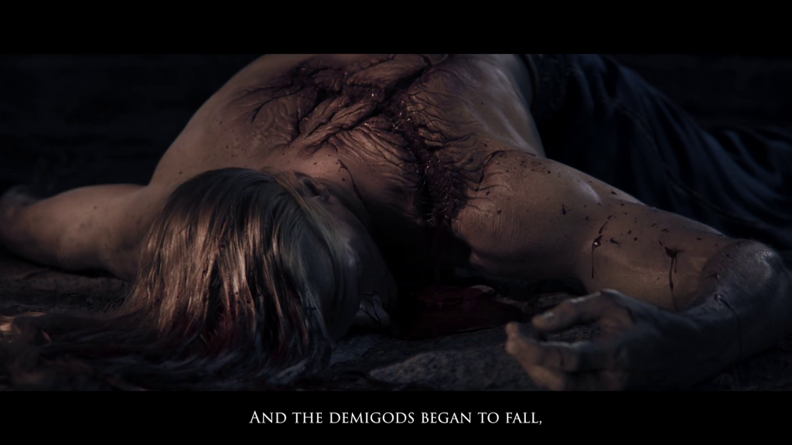
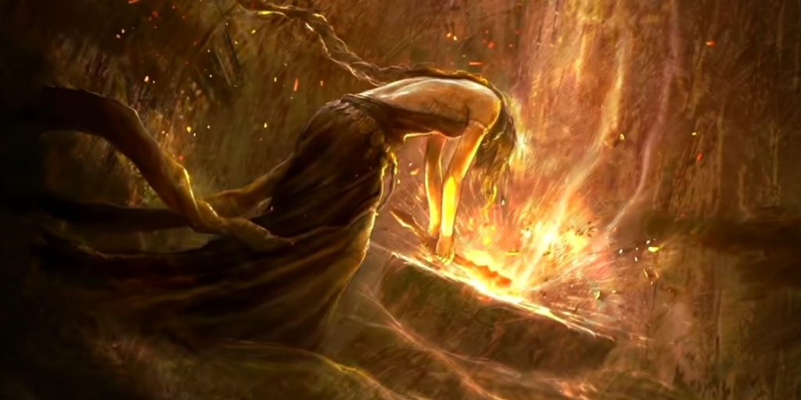
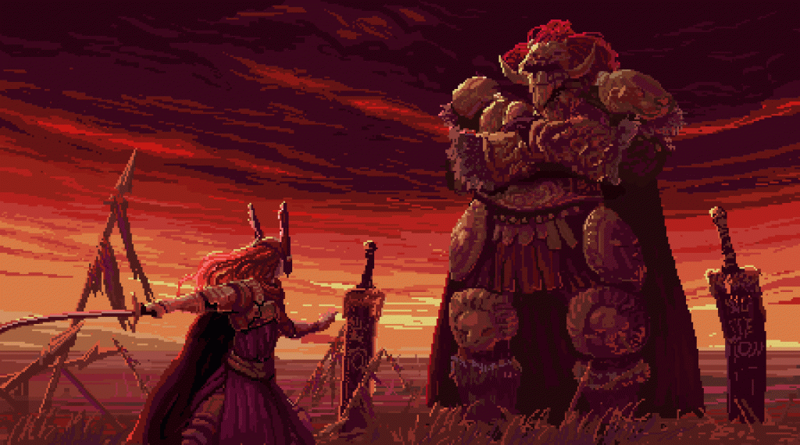

Godwyn, el hijo y semidios primogénito, será el elegido por Los Dos Dedos para ocupar el círculo de Elden una vez se jubile la madre, pero el exilio de Godfrey deja un hueco a rellenar. Marika decide casarse entonces con Radagon y lo convierte en el segundo Elden Lord. De esta unión surgen dos hijos más: Maquella y Malenia. Pero aquí viene el verdadero “loco” plot twist de esta historia. Resulta que Radagon y Marika son la misma persona; fruto de la división de la misma esencia; hombre y mujer que conforman al mismo ser. Como el auto-incesto (Que debe ser incesto de algún tipo, que os recuerdo que George R.R. Martin está implicado) no pinta bien, ambos hijos de esta unión salen con genes de Deidad Pura, pero con algunas maldiciones bíblicas a sus espaldas. Pero luego iremos a eso, porque Godwyn El Dorado, el legítimo sucesor (y futurible tercer Elden Lord) amanece muerto en Lyndell.
La muerte del primogénito parece enloquecer a la madre, la Diosa eterna. Marika decide romper el círculo de Elden. Las runas que lo conforman quedan desperdigadas por toda Las Tierras Intermedias. Después de eso, tanto Radagon como ella desaparecen; quedan los hijos. Estos sucumben a una lucha de poder por adquirir las runas y convertirse en legítimos Elden Lords; cada uno con sus propias intenciones. Comienza así la gran guerra que se acuñó como la Devastación y que quebró por completo Las Tierras Intermedias. Una contienda atroz de la que nadie salió vencedor. En el castillo de Velotormentoso en Necrolimbo, Godrick (Descendiente lejano de Godfrey), comenzó a implantarse los brazos de sus enemigos con ánimo de fortalecer su cuerpo para la contienda. En Caelid, la batalla entre Malenia y Radhan Azote de Estrellas, desató una plaga de corrupción llamada La Putrefacción Roja; Malenia desapareció y Radahn enloqueció; vagando por el campo de batalla mientras devora los cuerpos de los caídos en la contienda.
¿Quién es, exactamente, Godrick el injertado? ¿Cuál es su linaje con Godfrey? No es hijo suyo hasta donde se sabe, y se considera un semidios con la sangre tan diluida que sufre una fuerte crisis de seguridad en sí mismo. Eso le lleva a injertarse los miembros de los enemigos caídos cuando los considera dignos, tratando de mejorar su poder para ser un contendiente en la sucesión de los Elden Lord. ¿Qué hay de Marika? ¿Por qué destruyó el anillo? Todo implica que fue por la pena de la muerte de su hijo. Pero, ¿no estaba mejor guardada la runa de la muerte en el Árbol Áureo? ¿Por qué dice su hermano que le traicionó al encomendársela? ¿Acaso había otros motivos y todo lo sucedido tuvo que ver con sus intereses?
